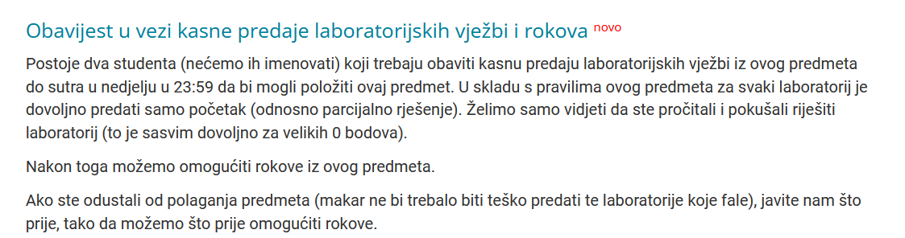

Šta je oće biti zimskog roka, nema nikakvih obavijesti, jos sam nerasporeden, nisam mogao na zavrsni jer sam imao korolu, nemam pojma sta se desava
Ona obavijest za dva studenta sta nisu predali labose, kao da smisle jel planiraju proc predmet da nositelji znaju jel misle omogućiti rok iz predmeta, koji kurac
